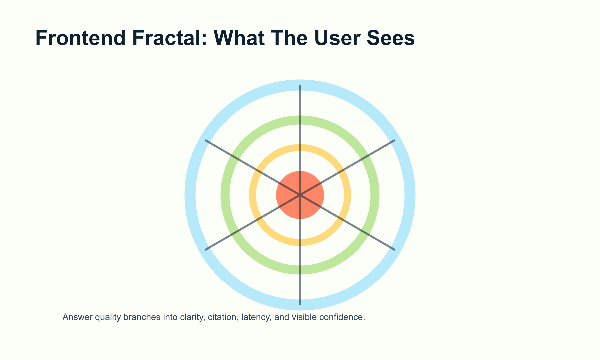
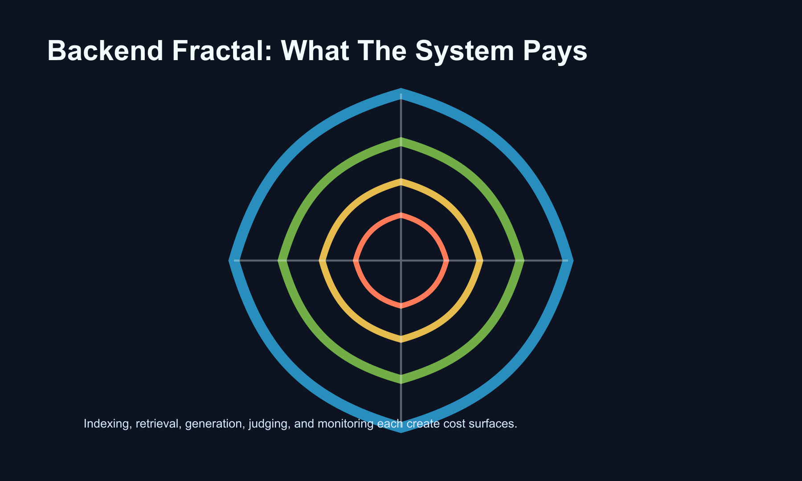

A Practical Technical Book on IR and RAG Metrics
2026-08-25
This book gives a compact working theory of retrieval evaluation. It is written for teams that build search, recommendation, and retrieval augmented generation systems.
The goal is operational clarity. A metric should tell a team what decision to make, what risk remains, and what companion measurement belongs beside it.


Retrieval evaluation starts with four questions.
| Dimension | Question | Typical failure it catches |
|---|---|---|
| Correctness | Is the retrieved or generated content right? | Irrelevant result, unsupported answer, wrong citation |
| Alignment | Do the retriever and generator cooperate? | The answer is correct while retrieval contributed little |
| Integrity | Has the system changed over time? | Embedder drift, corpus drift, judge drift |
| Efficiency | What did quality cost? | Latency, token waste, redundant context, rebuild expense |
Every dashboard should answer all four questions. Many teams answer the first question many times.
Correctness is the local question. It asks whether a document, claim, answer, or citation passes a judgment.
Alignment is the system question. It asks whether the retrieved evidence helped the generator produce the answer.
Integrity is the time question. It asks whether the score has the same meaning after a release, model change, corpus update, or judge change.
Efficiency is the resource question. It asks whether the extra quality is worth the latency, tokens, engineering work, and operational risk.
A metric needs a label before it needs a number. The label has four facets.
| Facet | Values | Use |
|---|---|---|
| Unit | document, passage, claim, answer, session, system | Tells what item receives a score |
| Supervision | judged, reference-based, reference-free, behavioral | Tells where truth comes from |
| Stage | retrieval, generation, citation, evaluation, deployment | Tells which layer owns the fix |
| Tier | diagnostic, release gate, monitor, audit | Tells how often to compute it |
Write the facet line under every metric name. A reader should know where the number lives before seeing the formula.
Two metrics can share a formula shape and answer different product questions. Precision over retrieved documents, citation precision over cited passages, and claim precision over generated assertions belong to different operational layers.
The unit matters most. A claim-level score can improve when answers become shorter. A document-level score can improve while citations stay wrong. A session score can hide one catastrophic answer inside a long interaction.
The stage matters next. Retrieval teams can act on nDCG, recall, and redundancy. Generator teams can act on claim support and citation faithfulness. Platform teams can act on latency, token cost, and judge stability.
A signal is an observation. A metric is a decision instrument.
Mean embedding distance is a signal. Token count is a signal. Number of retrieved chunks is a signal. They become metrics when paired with a defined decision, threshold, or comparison.
Use this test: if the number moves, can the team name the action? If yes, it is ready for the dashboard. If no, keep it in the analysis notebook.
Common signals in retrieval work:
| Signal | Useful action |
|---|---|
| Retrieved chunk count | Debug fanout and routing |
| Mean similarity | Inspect retriever confidence |
| Token count | Estimate cost |
| Query length | Segment traffic |
| Judge confidence | Prioritize human review |
Production metrics should be boring. They should send engineers to the correct subsystem.
Classical IR gives the measurement grammar for retrieval. RAG changes the downstream system. The same grammar still matters.
Precision measures the share of retrieved items that are relevant. Recall measures the share of relevant items that were retrieved. F1 combines the two when a single operating point is useful.
| Metric | Use | Watch |
|---|---|---|
| Precision | Topical cleanliness | Can reward timid retrieval |
| Recall | Coverage | Needs a known relevant set |
| F beta | Product-weighted tradeoff | Hides the separate movement of precision and recall |
| Precision@k | Top-k quality | Ignores relevant items below k |
Rank metrics add position. They model attention. High ranks matter more because users and generators consume early items first.
| Metric | User model | Best fit |
|---|---|---|
| MRR | First useful hit ends the search | Known-item lookup |
| MAP | Every relevant item matters | Recall-rich search |
| nDCG | Graded relevance with rank discount | General ranked retrieval |
| ERR | User may stop after satisfaction | Navigational search |
| RBP | Persistence at each rank | Stable, interpretable dashboards |
For RAG, compute rank metrics at the injected depth. The generator can use only the context it receives.
Judgment pools are incomplete in real systems. bpref and infAP reduce sensitivity to missing labels. They are useful when old test collections meet new retrievers.
Kendall tau and Spearman rho compare full ranked lists. RBO compares top-heavy overlap and works with unequal lists. RBO is the practical drift metric for monthly retrieval monitoring.
Formula: retrieved relevant items divided by retrieved items.
Use it when the product experience is damaged by junk results. Legal search, clinical lookup, and support automation often need high precision near the top of the list.
Read precision with recall. High precision can come from a cautious retriever that returns too little.
Formula: retrieved relevant items divided by all relevant items.
Use it when missing evidence is the primary harm. Compliance review, patent search, literature review, and retrieval for synthesis belong here.
Recall needs a denominator. In live systems that denominator is usually approximated by pooled judgments, curated cases, or task-specific audits.
Formula: weighted harmonic mean of precision and recall.
Use beta greater than 1 when misses are costly. Use beta less than 1 when junk results are costly. Report the chosen beta beside the score.
Formula: average reciprocal rank of the first relevant result.
Use it for known-item tasks: password reset article, account policy page, exact entity lookup. The first useful hit ends the search.
Formula: average of precision values at relevant ranks, then averaged across queries.
Use it when many relevant items matter. MAP rewards systems that retrieve relevant items early and consistently.
Formula: discounted cumulative gain divided by ideal discounted cumulative gain.
Use it when judgments are graded. nDCG handles “excellent”, “acceptable”, and “weak” relevance in one score.
For RAG, choose k as injected context depth. If the retriever returns 50 passages and the generator receives 8, nDCG@8 describes the usable ranked evidence.
Formula: rank-biased precision with persistence parameter p.
Use it when you want a stable top-heavy score. The parameter p expresses how likely the user or downstream consumer is to continue to the next rank.
Formula: rank-biased overlap between two ranked lists.
Use it for drift. Compare today’s ranking with a frozen baseline at the same k. Keep the query set and corpus timestamp visible.
RAG evaluation has three objects: evidence, answer, and judge.

Claim decomposition is the clean unit for answer evaluation. Break the answer into atomic claims. Score whether each claim is supported, contradicted, or absent in the retrieved context.
RAGChecker is valuable because it separates retriever failures from generator failures. Claim Recall estimates whether required claims were found. Self-Knowledge estimates the rate of answers supplied from model memory. Hallucination estimates unsupported generated content.
RAGAS is useful for reference-free evaluation. Treat paper definitions and library implementations as separate instruments. Pin the version.
ALCE-style citation metrics ask whether citations support the sentence they cite. The leave-one-out trick tests whether a citation is doing real work.
Alignment asks whether retrieval helped generation. Contribution metrics estimate the utility of a document or passage by measuring what changes when it is present, absent, or perturbed.
| Family | Measures | Use |
|---|---|---|
| eRAG / DIG / SePer / Gain | Passage contribution to answer quality | Diagnose context utility |
| WARG | Gap between retrieved relevance and generated attribution | Detect wasted retrieval and low-rank dependence |
| CUE / MIRAGE quadrants | Relationship between answer quality and context use | Find lucky guesses and blind spots |
| UDCG | Utility and distraction in ranked context | Tune retrieval for generator use |
Pick one contribution metric for the dashboard. Use the others as audit tools during method work.
Integrity metrics watch change. Use RBO against a frozen baseline for rank drift. Use version-sensitive question sets for corpus drift. Use anchor sets and Krippendorff alpha for judge drift.
Efficiency should include index-time, query-time, token-time, and evaluation-time costs.
| Cost center | Metric |
|---|---|
| Indexing | rebuild time, index size, embedding cost |
| Query serving | TTFT p50, TTFT p95, total latency |
| Context | tokens per query, pairwise redundancy, evidence hit rate |
| Evaluation | judge calls, human review minutes, audit cost |
Unit: claim.
Question: did the retrieved context contain the information needed for the answer?
Use it as the ceiling metric. A generator cannot ground a claim in evidence that never arrived. Low Claim Recall sends work to retrieval, query rewriting, corpus coverage, or chunking.
Unit: answer or claim.
Question: how often did the model answer correctly from parametric memory while retrieved evidence missed the answer?
Use it to separate product success from retrieval success. This metric matters in domains where model memory is strong enough to hide retrieval failure.
Unit: claim.
Question: which generated claims lack support?
Use it as a release gate for high-risk surfaces. Pair it with average claim count, because short answers generate fewer opportunities for unsupported claims.
Unit: citation.
Question: does the cited source support the sentence that cites it?
Use it when users see citations. A citation should carry evidence. Sentence-level checking gives the cleanest product signal.
Unit: passage or document.
Question: how much did this retrieved item improve the generated answer?
Use one member of the family for the dashboard. Use perturbation studies and ablations during method development.
Unit: query.
Question: does generated attribution follow retrieved relevance?
Use it before investing heavily in retriever ranking improvements. A low alignment score means the generator may be drawing value from low-ranked passages or ignoring top-ranked passages.
Unit: labeled item.
Question: does the automated judge agree with the human anchor set?
Use Krippendorff alpha for multi-label or missing-label settings. Report the anchor set date and judge snapshot.
Start with eight measurements and two context lines.

| Number | Metric | Dimension | Reason |
|---|---|---|---|
| 1 | Claim Recall | Correctness | Sets the ceiling for grounded answer quality |
| 2 | Self-Knowledge | Correctness | Measures correct answers supplied without retrieved support |
| 3 | Hallucination | Correctness | Tracks unsupported generated content |
| 4 | nDCG@injected-k | Correctness | Keeps continuity with retrieval evaluation |
| 5 | One contribution metric | Alignment | Measures whether context helps the answer |
| 6 | RBO against frozen baseline | Integrity | Detects rank drift cheaply |
| 7 | Pairwise Redundancy | Efficiency | Finds repeated context and wasted tokens |
| 8 | TTFT p50 / p95 | Efficiency | Measures the latency users feel first |
Context lines:
| Line | Reason |
|---|---|
| Average claim count per answer | Prevents brevity from looking like quality |
| retrieval contribution experiment | Shows whether retrieval earns its operational cost |
Report each metric with owner, unit, denominator, evaluation set, judge version, and date.
Each row should include:
| Field | Purpose |
|---|---|
| Metric | Names the instrument |
| Dimension | Names the question |
| Owner | Names the team that can act |
| Unit | Prevents denominator confusion |
| Set | Names the evaluation slice |
| Version | Pins corpus, embedder, generator, and judge |
| Last run | Makes staleness visible |
| Action band | Converts movement into work |
Action bands make a score operational.
| Band | Meaning | Action |
|---|---|---|
| Green | Within expected range | Monitor |
| Yellow | Movement needs review | Sample failures |
| Red | Product risk | Block release or roll back |
Use bands sparingly. A band with no owner creates noise.
Freeze the baseline. Save 500 queries, top-k results, embedder version, retriever version, corpus timestamp, injected k, and judge version.
Create a 100-item human-labeled anchor set. Time a full index rebuild. Record the number.
Run the retrieval contribution experiment. Measure semantic test coverage. Compute pairwise redundancy. Compare MAP and bpref to estimate judgment distortion. Run a position-bias test on the judge.
Run a k sweep over k = 1, 3, 5, 10, 20, 50. Plot recall, answer quality, redundancy, tokens, and TTFT. Set k at the knee of the curve.
Run the full diagnostic layer offline. Promote three RAGChecker metrics. Sample CUE quadrants. Run WARG once to test whether the generator follows the retrieved ranking. Build a 50-question version-sensitive set.
Run RBO monthly. Run expensive diagnostics per release. Run the judge anchor set for every judge change. Run Jaccard and RankSimilarity for every embedder change.
Faithfulness scores generated support. Retrieval hit rate scores whether the required evidence arrived. A team needs both numbers on one row.
A passage can be topically relevant and harmful to reasoning. A passage can be tangential and useful. Use a contribution metric when generation is the product surface.
A new judge can move scores while the product stays fixed. Pin the judge. Re-score the anchor set. Report alpha.
Latency and tokens shape the feasible system. The cost-quality frontier is the artifact that lets a team choose a point deliberately.
Retriever, generator, evaluation, platform, and product teams need separate accountability. A metric that names no owner becomes ceremony.
A rate without its denominator invites misreadings. Claim rate, answer rate, query rate, and session rate can all move differently.
Every release review should include sampled failures beside aggregate scores. The sample teaches the team what the number means this week.
Some metrics are too costly for every build. Run them during release review, incident review, and method evaluation. Promote only the cheap, stable, high-signal subset to continuous monitoring.
The book is Pandoc-ready Markdown.
Build a PDF from the measuring-retrieval-book
directory:
pandoc metadata.yaml chapters/*.md --css assets/book.css --toc --number-sections -o measuring-retrieval.pdfBuild HTML for quick review:
pandoc metadata.yaml chapters/*.md --css assets/book.css --toc --number-sections -s -o measuring-retrieval.htmlThe SVG diagrams are in assets/diagrams. The frontend
and backend fractals are in assets.
| Product question | First metric | Companion metric | Owner |
|---|---|---|---|
| Are top results clean? | Precision@k | Recall@k | Retrieval |
| Did we find enough evidence? | Claim Recall | nDCG@injected-k | Retrieval |
| Are answers grounded? | Hallucination rate | Average claim count | Generation |
| Are citations useful? | Citation Precision | Citation Recall | Generation |
| Is the generator using retrieval? | Contribution metric | WARG | System |
| Did retrieval drift? | RBO against baseline | Jaccard@k | Retrieval |
| Did the judge drift? | Anchor-set alpha | Score delta by slice | Evaluation |
| Are we wasting context? | Pairwise Redundancy | Tokens per answer | Platform |
| Is latency acceptable? | TTFT p95 | Total latency p95 | Platform |
| Is evaluation affordable? | Judge calls per release | Human review minutes | Evaluation |
Run a structure scan:
rg -n "^#|^##|^###" chaptersmake pdfCheck the cover, table of contents, diagrams, tables, and page breaks.